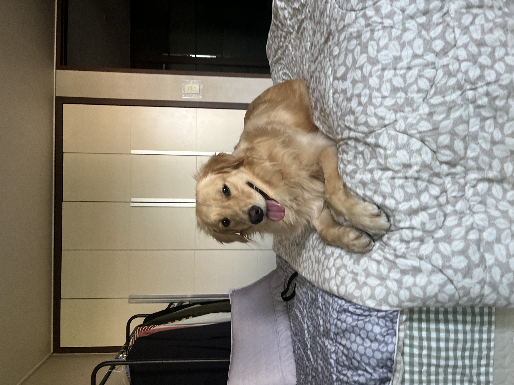
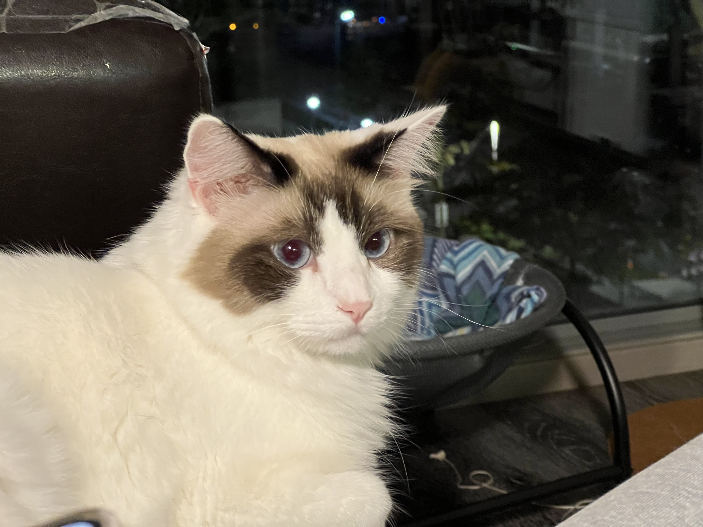
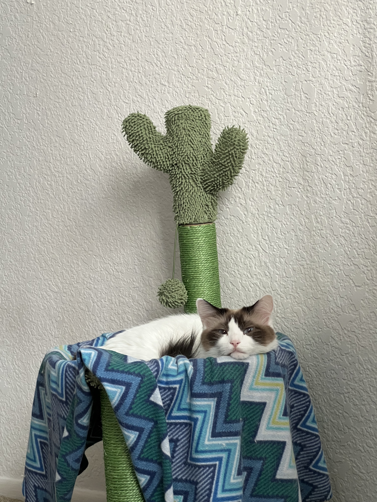
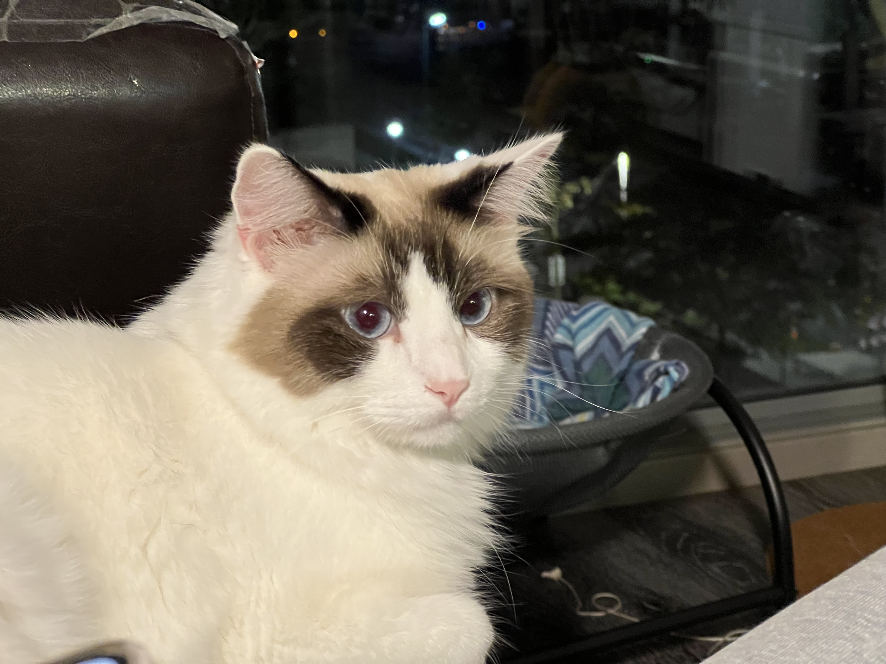
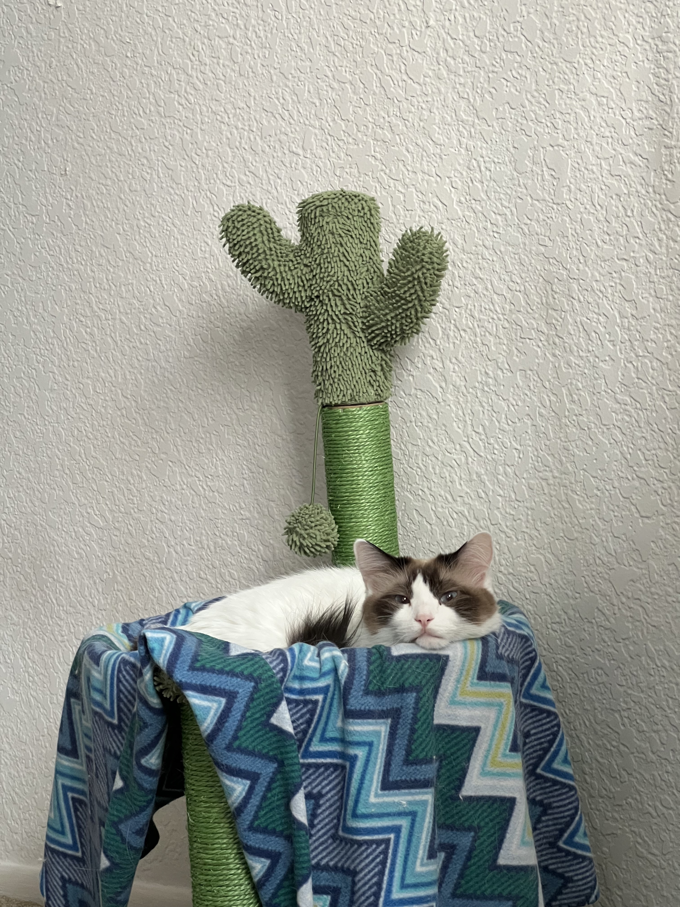

Miumiu

Miumiu is a five-year-old silver gradient British shorthair cat. She was born in Russia and raised in the United States and China. She is a mom of two babies. She loves to sleep.
Miumiu is kind of timid and afraid to meet strangers. But she is very close to her family, she loves to lie next to her family. She is very talkative and loves to meow.
Photo Gallery


Likes
- Chicken breast
- Sleeping
- Observing birds outside the window
Rocket

Rocket (also named huihui) is a 6-month pomeranian puppy with big eyes and a small, black cute nose. Rocket is named rocket because he runs so fast and energetic all day without even having some rest. Rocket loves to carry his little toy walking around the house and jumping towards my bed.
Rocket is friendly to all human beings. He will be a little shy at first, but will ‘say hi’ to you after a few seconds. He is also friendly to dogs, especially the small breed, because the large size dogs are hard for him to smell lol. If you meet rocket, don’t hesitate to say hi to him!! He will be super happy the whole day.
Photo Gallery


Likes
- Chewing bones
- Chasing
- Running
Pluto

Pluto is a five year old rescue dog of an unknown breed. He was found wandering alone and taken to the Valley Humane Society where he found his new family. From a young age, Pluto always had a special personality, he was known for being very very lazy! He spends most of his time staring out the window to keep watch of his house. Don’t let the laziness fool you because Pluto defends his family from the mailman and squirrels every single day.
Aside from his job as defender of the house, Pluto likes to have fun. Pluto’s favorite part of the day is his daily walk. Sometimes he even gets to go to the park and meet his neighbors. He also loves his toy duck, and only his toy duck. As a dog, it's in his nature to hunt and so he makes sure to get some practice with his toy duck.
Photo Gallery


Likes
- Eating his bone
- Going to the beach
- His toy duck
Sage
Sage is a 3 year old Golden Retriever. She is one of the laziest dogs. She loves sneaking into the bedroom and hopping onto the neatest bed. She also loves riding in a car with the windows open feeling the wind and air. She enjoys walking, only if you take her for a ride to a big arboretum or park. Walking around the neighborhood is not necessarily her cup of tea.
Her favorite food is corn. One day, she stole corn on the cob from the dining table, which was surprising because she is normally gentle and polite. She took the stolen corn to the patio and enjoyed her meal by herself. Unfortunately, the corn turned out to be unripe, so she ended up vomiting it all later.
Photo Gallery


Likes
- Carrot
- Nap
- Big Park
Peddie

Peddie, the Golden Retriever, is a charming and lively companion known for his beautiful coat and playful nature. He's a perfect partner for outdoor fun, loved for his loyalty and gentle disposition.
Peddie's intelligence and friendly demeanor make him a beloved member of his family and a source of joy for everyone who knows him.
Photo Gallery


Likes
- Swimming
- Running in the part
- Meeting new friends
Juno

No one knows exactly what breed Juno is, but that makes him all the more special. He was adopted before he was one year old; despite this and his German shepherd-esque looks, he stayed close to the same size, hovering around 50 lbs into adulthood. At the weathered age of ten years old, Juno is dealing with hip problems, but manages to stay in good spirits.
One of Juno’s favorite pastimes is finding the dirtiest puddle within a one-mile radius and making sure every inch of him makes contact with said puddle. If rolling around in dirt was an Olympic sport, Juno would have been the one that facilitated its inclusion into the Olympics.
Photo Gallery


Likes
- Human food
- Head pats
- Sleeping
Van Gogh

Van Gogh is a three year old cat of mixed ragdoll and domestic shorthair breed. He was adopted when he was 7 months old. Van Gogh has been a people cat since he was young. He craves attention but needs alone time when he wants it. He is purely a masterpiece when his sapphire eyes staring at his human friends. He loves birds, rats, insects, and water from human mug..
Van Gogh is responsible for his household safety. But he gets scared when the vacuum machine wakes up. He tries his best to make defense but his beautiful fur coat gets messed up immediately when he gets too close. By the way, he likes his fur coat being brushed by himself. He bites when he does not get enough attention, but he always gets what he wants.
Photo Gallery
 



Likes
- Biting his human
- Chicken Breast
- His catnip pillow